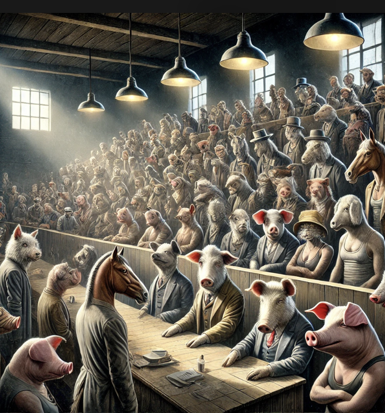

동물농장
목차
작가
조지 오웰
출판일
2009년
감상평에 대한 AI그림
처음에는 동물들의 이야기인 줄만 알았지만 이 책이 인간들의 정치적 풍자와 사회 비판을 담고 있는 책이라는 것을 알게 되었다. 이 소설이 단순히 동물들의 이야기로 끝나는 것이 아니라 인간 사회에 대한 통찰을 제공해줘서 더욱더 인상 깊었던 것 같다.

감상평에 대한 AI평가
~~~~AI평가~~~~~
✨ 이 글은 처음에는 단순한 동물 이야기로 보였던 소설이 사실은 정치적 풍자와 사회 비판을 담고 있다는 점을 깨닫게 된 과정과, 이를 통해 더욱 깊은 인상을 받았다는 내용을 담고 있습니다. 작품을 단순한 이야기로 소비하는 것이 아니라 그 이면의 메시지를 파악하려는 태도가 돋보이며, 소설이 제공하는 사회적 통찰을 중요하게 여겼다는 점에서 성숙한 독서 감상을 보여줍니다. 다만, 문장이 조금 더 자연스럽게 정리되면 더 매끄러울 것 같습니다. 예를 들어
"처음에는 단순히 동물들의 이야기라고 생각했지만, 이 책이 인간 사회에 대한 정치적 풍자와 비판을 담고 있다는 것을 알게 되었다. 단순한 우화로 끝나는 것이 아니라 깊은 통찰을 제공해 더욱 인상 깊었다." 이렇게 표현하면 문장이 좀 더 간결하고 논리적으로 정리됩니다. 😊